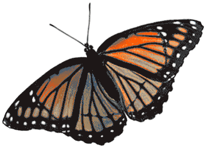

<md-toolbar class="md-primary" id="toastLocation">
	<div >
 		<div class="md-toolbar-tools" layout="row" layout-align="start center">
 			<div flex="33" layout="row" layout-align="start center">
				<span ng-show="vm.homeLink"><a ng-href="" ng-click="vm.changeView('home')"><span></span></a></span>
				<span ng-hide="vm.homeLink"></span>
				
				<md-button class="md-raised md-primary" aria-label="View Album" ng-disabled="vm.mainDisabled" ng-click="vm.changeView('album')">
					Scrapbook
				</md-button>
        		
				<md-button class="md-raised md-primary" aria-label="View Family Sheet" ng-disabled="vm.mainDisabled" ng-click="vm.changeView('sheet')">
 					Family Sheet
 				</md-button>
  			</div>		

   		<div flex="33" layout="row" layout-align="center center">
    		<md-button class="md-raised md-primary" aria-label="Edit a Person" ng-disabled="vm.mainDisabled" ng-click="vm.changeView('editName')">
         		Edit
   			</md-button>
  
			<md-button class="md-raised md-primary" aria-label="Add a Person" ng-disabled="vm.mainDisabled" ng-click="vm.changeView('addName')">
 				 Add
 			</md-button>
			</div>

   		<div flex="33" layout="row" layout-align="end center">			
   			<md-button class="md-raised md-primary" aria-label="Communication" ng-disabled="vm.mainDisabled" ng-click="vm.changeView('communication')">
         		Communicate
   			</md-button>
  
			<md-button class="md-raised md-primary" aria-label="Search People" ng-disabled="vm.mainDisabled" ng-click="vm.changeView('search');">
 				 Search
 			</md-button>
 		</div>
 			
  			<md-button class="md-raised md-primary" aria-label="Logout" ng-disabled="vm.mainDisabled" ng-click="vm.logout()">
        		Logout
  			</md-button>
  			
			<md-menu md-offset="0 50">
			
			<md-button style="margin-right:20px" ng-click="$mdOpenMenu($event)" ng-href class="md-icon-button" aria-label="Menu">
			    <md-icon>menu</md-icon>
			  	<md-tooltip md-direction="left">
     					Open Menu
   				</md-tooltip>
			</md-button>
			
			<md-menu-content>
  					<md-menu-item><md-button ng-click="vm.doPrivacy()">Privacy</md-button></md-menu-item>
  					<md-menu-item><md-button ng-click="vm.showSettings()">Settings</md-button></md-menu-item>
				</md-menu-content>
				
		</md-menu>
  		</div>
  		</div>
</md-toolbar>
